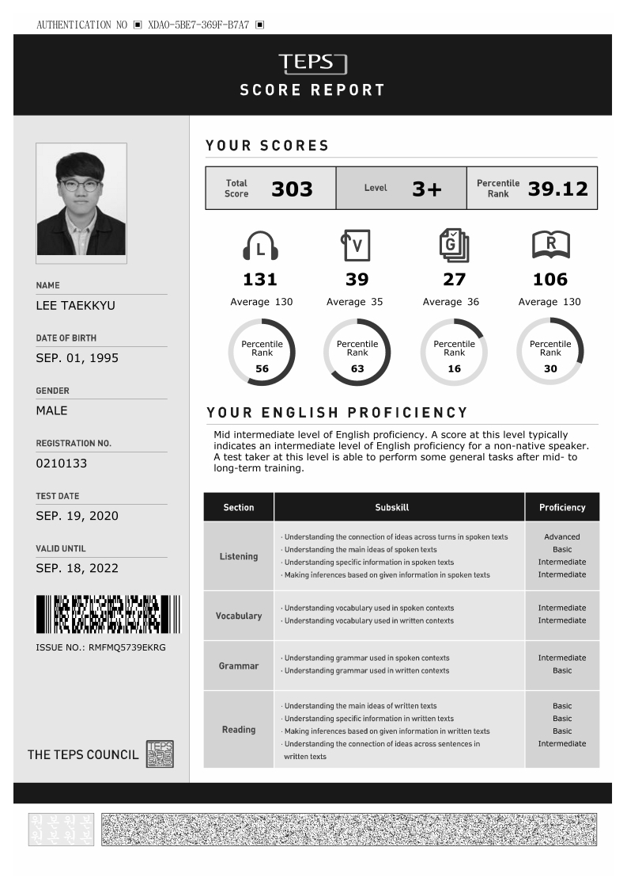
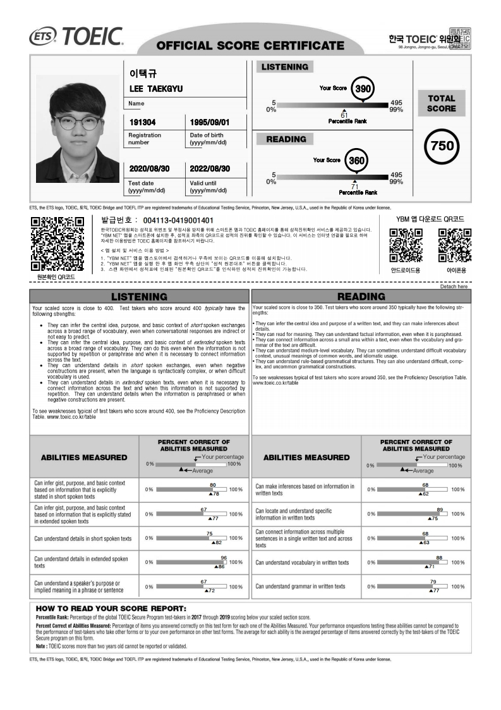
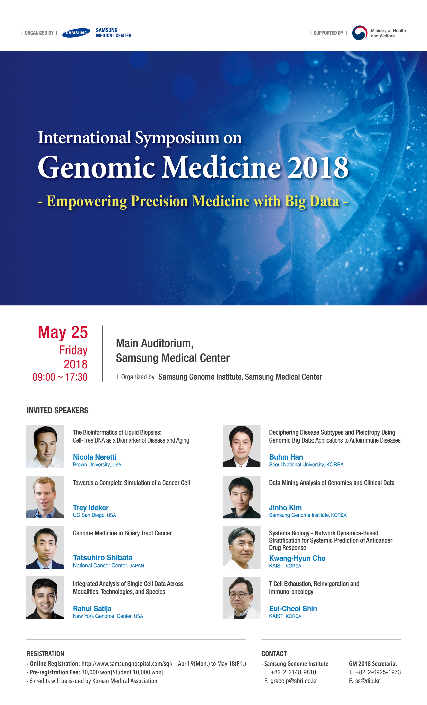
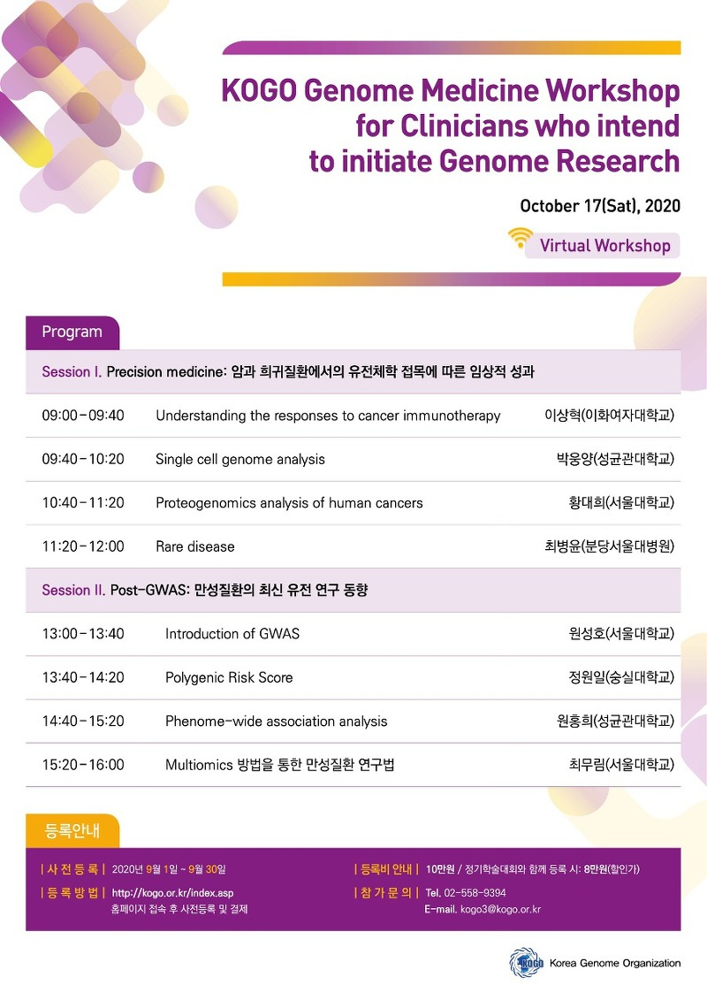

Name
Taek Kyu Lee
Nationlaity
Korean
Birth
1st September, 1995, in Republic of Korea
Military Service
Army (15th September , 2015 ~ 14th June , 2017)
Address
104 - 705 , 157, Jangasan-ro, Namdong-gu, Incheon
Contact
010-5511-5706
pickyu@naver.com
1.지원동기
고려대학교 암 유전체 연구실에서 이루어지는 연구를 통해 빅데이터 수준의 임상정보를 다루고 분석한다면 정밀 의학을 실현할 수 있는 연구자가 될 수 있음을 확신하여 지원하였습니다. 그리고 약물정보를 분석연구와 single - cell sequencing에 대하여 배운다면 치료가 어려운 난치암 및 후기로 진행된 암을 좀 더 효율적으로 치료할 수 있는 방향을 제시하는 연구자가 될 수 있다고 생각하기 때문입니다.
저는 빅데이터 기술과 생명과학을 융합하여 인간의 유전체를 분석하는 분야를 2018년 삼성서울병원에서 주최한 Genomic medicine 2018 symposium에서 처음 접하게 되었습니다. 심포지엄 참석 이후 관련 내용에 대하여 조사하였습니다, 그리고 생물정보학을 전공하기로 다짐하였습니다. 당시 재학 중이던 학교에서는 생물정보학과 관련된 교과목이 개설되어 있지 않았습니다. 따라서 생물정보학을 구체적으로 배우기 위해 편입을 하였습니다. 편입 이후 관련 수업을 수강하고 유전체 분석 교육 프로그램에 참여하여 유전체 분석가가 되기 위해 노력했습니다.
유전체 분석 교육에서 프로그래밍 언어인 Linux, python, R을 학습하였고 WGS, WES, Target - Seq, RNA - Seq, Metagenome에 대한 실습을 경험했습니다. 또한 특강 형식으로 Liquid Biopsy, Machine/Deep learning에 관한 학습이 이루어졌습니다. 이 교육을 통해 유전체 분석 과정을 이해하였고 이를 활용할 수 있습니다. 그리고 실습 시 서버를 이용하여 데이터를 분석하였고 pipeline을 구축하여 분석에 임하였기 때문에 데이터 전처리 및 분석 과정을 수행할 수 있습니다.
위 경험을 토대로 빅데이터 기반의 유전체를 탐구하는 방법에 대하여 심도 있게 배운다면, 인간의 유전체 정보를 좀 더 의미 있는 방향으로 해석할 수 있음을 확신하였습니다. 따라서 대학원에 진학하여 관련된 내용을 배우기를 희망하고 있습니다. 그리고 저의 지식과 경험을 고려대학교 암 유전체 연구실에서 연구하는 분야에 적용하고 활용한다면 훌륭한 유전체 분석가가 될 수 있을 것이라 생각합니다. 또한 실험실에서 저의 역량을 발휘하여 고려대학교 암 유전체 연구실에서 진행하는 발전적이며 혁신적인 연구를 뒷받침할 수 있다는 확신이 들었습니다.
2.장단점
장점 : 생각하는 습관
⦁나는 생각한다, 고로 나는 존재한다 - 데카르트
저의 장점은 항상 생각하기 위해 노력한다는 점입니다. 이는 생각의 중요성을 깨닫게 되었기 때문입니다. 또한 생각하며 행동하는 것과 아닌 것의 차이는 분명함을 알게 되었기 때문입니다.
대학교 입학 후, 용돈과 학교등록금을 보태기 위하여 아르바이트를 했습니다. 아르바이트를 하면서 능동적인 움직임보다는 시키는 대로만 작업을 진행했습니다. 이런 과정이 계속되다 보니 능동적인 행동 및 생각의 결여가 일어났습니다. 비록 단순한 작업일지라도, 생각의 결여는 불필요한 작업을 증가시켰고 발전적인 생각을 가로막았습니다.
이 경험을 바탕으로 생각의 중요성에 대하여 알게 되었습니다. 생각하며 행동한다 느꼈지만, 단지 익숙해진 상황에 대처할 수 있는 능력이라는 것을 알았습니다. 그렇기 때문에 새로운 상황과 익숙한 상황에서도 충분한 생각을 통해 행동하려 노력하고 있습니다. 이와 같이 항상 모든 상황에서 생각하려고 한다는 점이 제가 가진 장점이라고 생각합니다.
단점 : 급한 판단
⦁결정을 서둘지 말라. 하룻밤을 자고 나면 좋은 지혜가 생긴다. -푸시킨
저의 단점은 급한 상황에서 충분한 생각이 이루어지지 않는다는 점입니다.
최근 경험을 말씀드리겠습니다. 유전체 분석 교육 중 실제 데이터를 분석하여 보고서를 제한 시간 내에 제출해야 했습니다. 시간에 쫓기다 보니 Metagenome 분석 중, 분석 결과에 필요한 요소를 누락하고 인과 관계를 성립하기 어려웠습니다. 단점을 인지하고 RNA-Seq 분석에서는 무턱대고 시작하기보다는, 배운 내용을 바탕으로 충분히 생각하고 천천히 나아갔습니다. 결과적으로 분석에 알맞은 정보를 종합하여 결론을 도출할 수 있었습니다. 이 경험을 통해 빠른 판단이 항상 옳은 결과를 가져오진 않는 것을 다시 한번 느꼈습니다. 따라서 급한 상황에서도 차분함을 유지하고, 충분히 생각하며, 제가 가진 장점을 통해 가지고 있는 단점을 극복하려 노력 중입니다.
3.성장과정
살면서 자신을 발전시킨 행동이 하나 있습니다. 바로 일기를 쓰는 습관입니다. 일기를 쓰며 일상에 관해 평가하고 생각하는 시간을 가졌습니다.
처음 일기를 쓸 때, 시간의 순서에 따라 있었던 일을 나열하였습니다. 시간이 지날수록, 일기를 쓰는 목적에 대하여 생각하였고 이에 따라 일기를 쓰는 방식에 발전이 있었습니다. 그날 있었던 일을 바탕으로 개선해야 할 점, 칭찬할 점, 마음가짐, 목표 등 여러 가지 주제에 관하여 기록하였습니다.
이런 과정을 통해 가치관을 확고히 할 수 있었습니다. 그리고 처한 상황이나 가지고 있는 능력을 객관적으로 바라보려는 태도 또한 갖추게 되었습니다. 때문에 문제에 직면했을 때 해결하기 위해 우선적으로 해야 할 일들이 무엇인지 생각을 할 수 있게 되었습니다. 또한 지키지 못할 계획보다는 시간이 걸리더라도 능력에 맞는 계획을 수립하는 습관을 가지게 되었습니다. 그리고 형성된 가치관에 부합하는 행동을 하며 자신을 속이지 않기 위해 노력했습니다.
그리고 일기를 작성하는 것만큼 작성했던 일기를 다시 읽는 것의 중요성을 느꼈습니다. 일기를 되돌아보며 과거의 다짐했던 것과 목표를 충실히 지키고 있는지 확인할 수 있었기 때문입니다. 이 과정을 통해서 인생을 점검할 수 있었고, 힘든 자신을 위로할 수 있었습니다.
어쩌면 누군가는 일기를 쓰는 것이 사소한 일이라고 생각할 수 있습니다. 하지만 저는 일기를 쓰며 자신을 반성하고 미래를 계획하는 행동이 모여 가치관을 구성하고 신념을 세울 수 있음을 깨닫게 되었습니다. 따라서 하루도 빠지지 않고 실천하려 노력 중이며 작성한 일기를 통해 하루하루 성장하는 자세를 갖추었습니다.
4.포부
고려대학교 암 유전체 연구실에 들어간다면, 빠른 적응력을 바탕으로 교수님 및 실험실 인원들과 좋은 관계를 유지하기 위해 노력하겠습니다. 새로운 환경에서 적응이 일의 효율성에 영향을 미친다고 생각하기 때문입니다. 이런 기본적인 것을 바탕으로 고려대학교 암 유전체 연구실에서 이루고 싶은 것들과 장기적인 미래 계획에 대해 말씀드리겠습니다.
첫째, NGS 및 다중 오믹스 기반의 암 유전체 연구 시 유전체 분석 교육 기간 동안 구축했던 pipeline을 활용하여 효율적인 분석 pipeline을 구축해 나가기 위해 노력할 것입니다. 연구실의 연구 목적에 부합한 pipeline을 구축하고 이를 기반으로 암 유천제 연구를 진행하겠습니다.
둘째, 재학 기간 동안 데이터를 다루는 능력과 더불어 machine learning 과 deep learing을 학습하여 효율적이고 의미 있는 데이터를 처리 및 분석하겠습니다. 많은 데이터를 machine learning 과 deep learning을 기반으로 한 모델링 및 알고리즘을 통해 처리한다면 의미 있는 정보를 제공할 수 있다고 생각합니다. 구체적으로 유전체 분석을 통한 약물 유전체 맞춤치료 모델, 질병 위험도 예측 모델을 구축할 계획입니다. 또한 이를 기반으로 약물 데이터를 분석하고 약물에 대한 내성 기전을 연구하여 정밀 의학의 발전에 기여하겠습니다.
셋째, 연평균 17.6%의 성장률을 보이는 글로벌 단일 세포 분석 시장의 흐름에 맞춰 single cell - Seq에 대한 학습을 할 예정입니다. 단일 세포를 분석하고 이와 관련된 데이터를 구축해 나간다면 암의 혁신적인 탐지 및 암 치료와 관련된 위험을 파악하고 분석할 수 있다고 생각합니다. 샘플에서 얻은 암세포를 통해 암 진화 과정에서 서로 다른 변이를 획득한 클론 집단을 비교 분석하여 암 전이 및 증식에 관련된 데이터를 축적하고 이를 질병의 진단, 스크리닝, 치료 영역에 적용할 수 있도록 학습하겠습니다.
넷째, 장기적인 목표는 국내에서 암 연구를 활발히 진행하고 대외적으로도 많은 협력기관과 소통하여 관련된 많은 연구와 사업을 진행하는 국립 암 센터에서 일하는 것입니다. 그중에서도 암 빅데이터 센터에서 국가적인 암 DB를 구축하고 데이터 자원 관련 인프라를 구축하는 일을 목표로 하고 있습니다. NCDC(National cancer data center)에 양질의 암 관련 데이터를 제공하고 많은 이들이 정보를 활용할 수 있게 하고 싶습니다. 의미 있는 유전체 정보는 국가적인 차원에서 중요한 자원으로 여겨지기 때문입니다. 데이터 주권이라는 말이 도래하는 시대에서 많은 데이터를 축적하지 못하고 활용하지 못한다면 국가적 경쟁력 저하로 이어질 수 있기 때문입니다. 따라서 임상정보를 표준화하고 바이오 데이터의 저장, 분석, 활용을 위한 저장소 확충과 온라인 협업 환경을 제공하는 일을 목표로 하고 있습니다.
5.학업계획
유전체 분석 교육을 통해 관련된 학문을 배우며 해야 할 일에 대하여 알게 되었습니다. 따라서 이 부분을 인턴십 기간 및 대학원 재학 기간 동안 차근차근 수행해 나갈 예정입니다. 이런 부분에 대한 학습이 이루어진 상태를 가정하고 연구하고 싶은 주제 및 방향에 관하여 말씀드리겠습니다.
첫째, 기본적으로 Linux, python pandas 같은 언어를 학습하겠습니다. 교육기간 동안 data frame을 효율적으로 다루는 것의 중요성을 느꼈기 때문입니다. 그리고 데이터를 시각화하는데 많이 사용되는 R 언어에 관한 학습도 병행할 예정입니다. 구체적으로는 자그마한 파일을 파싱 할 때도 항상 코드를 짜며 연습할 것입니다. 다양한 접근으로 같은 결과를 도출하는 연습과 코드를 최대한 간소화하며 방어적 코딩을 할 수 있는 능력을 갖추기 위해 노력하겠습니다. 결과적으로 데이터 분석 준전문가 자격증, 리눅스 마스터 등 프로그램 관련 자격증을 취득하여 계획을 실천하겠습니다.
둘째, 빅데이터 시대에서 데이터를 효율적으로 처리하기 위한 방법으로 machine learing 과 deep learning 기법이 필수적임을 깨닫게 되었습니다. 따라서 이에 관한 학습도 진행할 예정입니다. 생물학 전공자로써 IT와 관련된 분야를 학습하기 제한적인 상황이었습니다. 하지만 교육 기간 동안 테라젠 바이오 빅데이터 사업부의 팀장님과 이메일을 주고받으며 학습방향에 대해 조언을 구하였습니다. 이를 바탕으로 machine learning 과 deep learning을 활용하여 약물 데이터를 효율적으로 분석할 수 있는 알고리즘 및 모델을 구현하기 위한 학습을 진행할 계획입니다. 이를 구현함으로써 약물 유전체 맞춤 치료를 실현할 계획입니다.
셋째, 기본적으로 영어에 대학 학습은 꾸준히 해 나갈 생각입니다. GATK Tool을 사용하며 pipe line을 구축하고 옵션을 이해하는 과정에서 영어의 쓰임이 필수적임을 알았습니다. 정확한 tool을 사용하고 올바른 결과를 얻기 위해선 쓰임을 정확히 파악해야 함을 느꼈기 때문입니다. 그리고 앞으로 연구주제를 선정함에 있어서 선행된 연구들을 분석하고 참고하기 위해서는 어학 능력이 무조건적으로 뒷받침되어야 하는 사실을 알았습니다. 때문에 어학공부를 꾸준히 하여 TOEIC, TOFLE, OPIC 같은 어학능력 자격시험에 응시하여 실력을 증명해 보이도록 하겠습니다.
넷째, 유전체 분석을 하면서 결과를 해석하기 위해서는 통계학적 지식이 뒷받침되어야 하는 사실을 알았습니다. 분석을 통해 나오는 수치를 해석할 수 있어야 실질적인 분석 결과를 도출할 수 있기 때문입니다. 따라서 통계학 공부를 재학 기간 동안 병행할 예정입니다. 한국형 온라인 공개강좌(K-MOOC)에서 통계학의 이해 Ⅰ, Ⅱ를 수강하며 실력을 향상시키겠습니다. 이해가 가지 않는 부분들은 교수님 및 선배들과 소통하고 질문하여 답을 찾아내도록 노력하겠습니다.
6.연구계획
학업계획을 통해 실천한 내용을 바탕으로, 고려대학교 암 유전체 연구실에서 NGS 기반 데이터를 통해 개개인마다 적용되는 약물의 효용성 및 저항성을 판단하는 연구를 진행할 계획입니다. 그리고 신규 약물에 대한 효과를 입증을 하거나 치료 표적을 발굴하는 연구 또한 진행할 계획입니다.
최근 신약개발 동향에 관한 글을 참고하면, 글로벌 제약사인 GSK의 유전학 연구소장은 신약 개발 시 유전체 데이터를 기반으로 신약을 개발할 때가 그렇지 않을 때보다 2배 이상 임상시험 성공률이 높다고 발효했으며 신약개발을 위해 유전체 분석 회사에 3350억 원을 투자했습니다. 그리고 영국에서는 10만 명 유전체 프로젝트를 실시하여 얻은 유전체, 임상 데이터를 통해 유전체 기업과 제약사가 협업하여 미래 진단 기술과 신약개발을 위한 연구를 진행하고 있다고 합니다. 국내에서도 이와 마찬가지로 신약개발을 위해 유전체 정보를 활용하고 있습니다. 바이오 빅데이터 구축 시범사업을 운영하며 희귀질환자를 모집하고 총 2만 명 이상의 임상정보와 유전체 데이터를 구축할 예정이며, 또한 K-DNA 사업을 통해 정상인, 암 환자, 희귀질환자를 대상으로 유전체 정보를 수집하고 있습니다. 이처럼 유전체 데이터의 축적과 활용으로 인한 질병의 치료와 신약개발의 중요성이 세계적으로 대두되고 있습니다.
이처럼 유전체 정보는 바이오산업의 성장 동력이 되어가고 있습니다. 이에 따라 저는 빅데이터 수준의 유전체 정보를 효율적으로 처리하여 정밀 의학 발전에 관련된 연구를 진행하고자 합니다. 수많은 사람의 유전체 정보를 바탕으로 수많은 약물의 위험성 및 실효성을 판단하고자 합니다. 이 연구를 통하여 개인마다 부작용이 유발될 수 있는 약물에 대한 위험성 정보를 환자에게 제공하여 알맞은 치료요법을 제시할 수 있는 연구를 진행할 계획입니다. 가장 적합한 약물정보를 제공함으로써 좀 더 진보된 의학과 삶의 질을 개선할 수 있는 방식을 제안해보고 싶습니다.
이런 학문적인 발전과 개발 목적은 결국 국민의 건강증진을 위함이며 국민의 삶의 질을 향상시키려는 목적과 부합하기 때문입니다.
7.자유 기재 사항
저는 빅데이터 기술과 생명과학을 융합하여 인간의 유전체를 분석하는 분야를 2018년 삼성서울병원에서 주최한 Genomic medicine 2018 symposium에서 처음 접하게 되었습니다. 심포지엄 참석 이후 관련 내용에 대하여 조사하였습니다, 그리고 생물정보학을 전공하기로 다짐하였습니다.
당시 재학 중이던 학교에서는 생물정보학과 관련된 교과목이 개설되어 있지 않았습니다. 따라서 생물정보학을 구체적으로 배우기 위해 편입을 하였습니다. 편입 이후 관련 수업을 수강하고 담당 교수님과 상담을 하였습니다. 그리고 멘토링 프로그램을 활용하여 유전체 분석 기업인 3BICS 실무자 분과 이야기를 나누었습니다. 이 과정을 통해서 유전체 분석에 필요한 정보를 얻었습니다.
이후 유전체 분석가가 되기 위한 계획을 세웠습니다. 하지만 그 과정에서 처음 접해보는 프로그래밍 언어를 배워야 한다는 것이 가장 큰 두려움으로 다가왔습니다. 하지만 교육을 통한 학습으로 두려움을 무릅쓰고 앞으로 전진하며 꿈을 이루기 위해 노력했습니다. 처음에는 두려웠던 모든 것들이 행동으로 옮기고 실천해보니 충분히 극복 가능함을 알았습니다. 그리고 충분히 해낼 수 있는 가능성을 보았습니다. 그리고 하면 할 수 록 재미를 느꼈습니다.
결론적으로 제가 가진 실행력을 통해 난관을 극복할 수 있었고 자신감 또한 얻을 수 있었습니다. 이러한 사실로 미루어볼 때 앞으로 대학원 생활을 하며 어떠한 어려움에 부딪히더라도 충분히 극복할 수 있음을 말씀드리고 싶습니다. 그리고 제가 가진 꿈을 고려대학교 암 유전체 연구실을 통해 실현하고 싶음을 말씀드리고 싶습니다.
Incheon National University (transfer)
4th. Mar. 2019 ~ Present
Department of Molecular and Medical Science
Undergraduate students (Senior)
Mokwon University
3rd. Mar. 2014 ~ 18th. Feb. 2019
Department of Biomedical Enginerring
Undergraduate students (Junior)
TEPS & TOEIC
2nd. May. 2020
30th. August. 2020
유전체 빅데이터 분석 예비전문가 과정
6th. Jul. 2020 ~ 11th. Sep. 2020
Linux, Python, R
WGS, WES, Target - Seq, Metagenome, RNA -Seq
Liquid Biopsy, Machine learning, Deep learning
Genomic Medicine 2018 (Attended)
25th. May. 2018
KOGO Genomic Medicine Workshop (Scheduled)
17th. Oct. 2020
